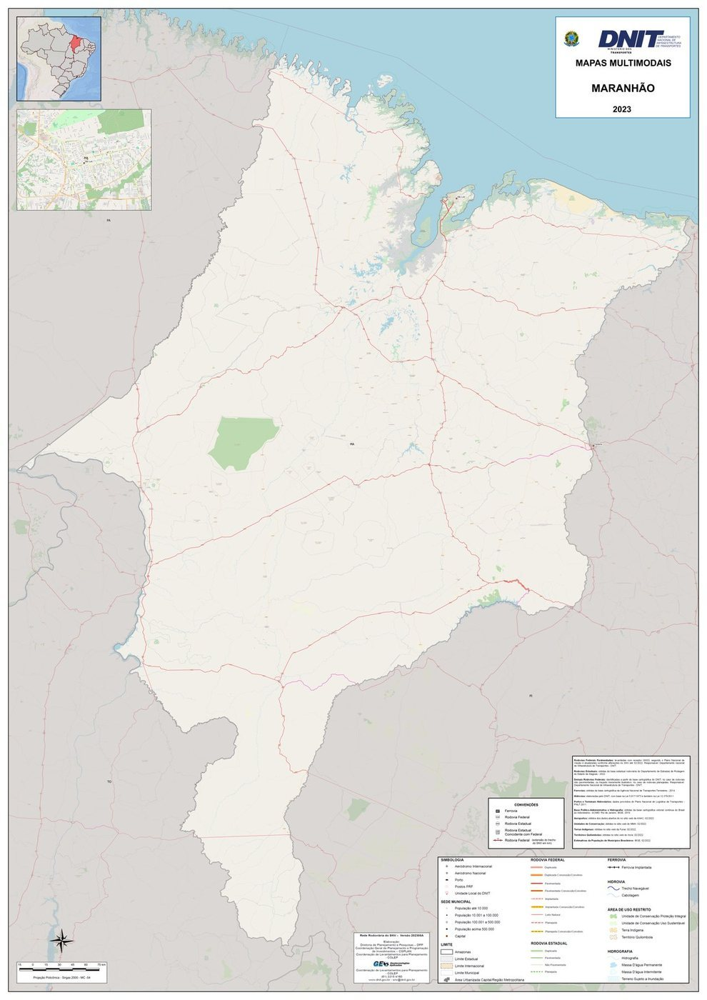

InícioProjetos de destaqueDNIT
Os 27 Mapas Multimodais oficiais, gerados a partir do banco
Transformei a produção dos mapas oficiais do DNIT em um atlas dirigido pelo banco: os 27 mapas em A0 saem sem diagramação manual.
27mapas em A0 sem diagramação manual; método na NT 101/2023
Contexto
Os Mapas Multimodais mostram rodovias, ferrovias, hidrovias, portos, aeródromos e áreas protegidas de cada UF e do Brasil. Cada estado tem forma e tamanho próprios, então a diagramação era feita mapa a mapa. Antes, o conjunto levava de 6 a 8 meses, em paralelo com outras funções.
O que fiz
- Medi os mapas já publicados e transformei dimensões e posições de cada elemento em regras de layout para o papel A0.
- Organizei os dados em PostgreSQL/PostGIS por esquemas temáticos e criei views por orientação de papel, com uma máscara que realça a UF da vez.
- Montei três layouts de atlas (paisagem, retrato e Brasil) em que posição, tamanho e escala de cada elemento são expressões lidas do banco.
- Programei a escala automática e os encartes especiais, como Fernando de Noronha e o Distrito Federal.
- Escrevi a NT 101/2023 e o manual para a equipe reproduzir o processo, e mantive o projeto até a versão 202410A do SNV.
Como funciona, em quatro etapas
Fontes oficiais
- SNV
- IBGE BC250
- Áreas protegidas
- Hidrografia
Banco espacial
- PostGIS, SIRGAS 2000
- Esquemas temáticos
- Configuração por UF
Views e atlas
- Views retrato e paisagem
- Máscara da UF
- Expressões de layout
Produto
- 27 mapas em A0
- PDF e PNG
- Portal do DNIT
Método
- Atlas do QGIS com propriedades definidas por dados (CASE WHEN sobre atributos da view)
- Views de cobertura no PostGIS por orientação de papel
- Escala automática em passos de 1:25.000
- Regras de layout extraídas da medição dos mapas anteriores
Resultado
- Geração automatizada dos 27 mapas a partir do banco: 26 de UFs (GO e DF juntos) e o do Brasil
- 20 UFs em paisagem e 6 em retrato, com a orientação guardada no banco
- NT 101/2023 e manual assinados por mim
Figuras


